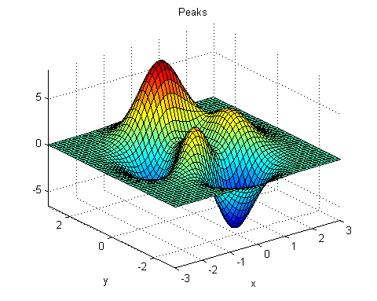

When peaks.m runs in the workspace, the following text is displayed to the command window:
z = 3*(1-x).^2.*exp(-(x.^2) - (y+1).^2) ... - 10*(x/5 - x.^3 - y.^5).*exp(-x.^2-y.^2) ... - 1/3*exp(-(x+1).^2 - y.^2)
